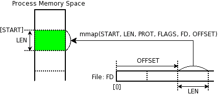
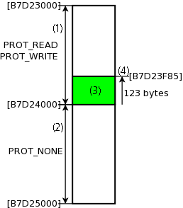
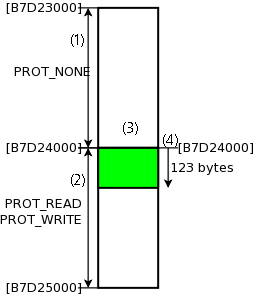
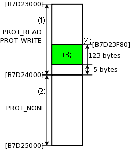

DUMA (Detect Unintended Memory Access)
DUMA는 그 자체보다, Electric Fence 또는 efence라고 널리 알려진 라이브러리의 후속 버전입니다. efence는 개발이 중단되었으며, 2005년 9월부터 DUMA라는 새 이름을 가지게 되었습니다. 확인 필요
DUMA(efence)는 글쓴이가 가장 즐겨 사용하는 디버깅 툴입니다. 효과도 높고, 문제가 있다는 것을 바로 알 수 있기 때문입니다. 또한 지원하는 시스템도 x86에 한정되지 않고 다양합니다.
이 글은 DUMA를 쓰는 방법과, DUMA의 동작 원리, 그리고 DUMA가 가진 문제점 등을 설명합니다.
DUMA가 잡아내는 버그의 종류는 크게 두 가지입니다.
/* Concatenate DEST and SRC. * DEST must be NULL or a pointer to malloc()ed string. */ char * string_concat(char *dest, const char *src) { int dlen, slen; char *p; if (dest) dlen = strlen(dest); else dlen = 0; slen = strlen(src); p = realloc(dest, slen + dlen); /* bug: need a memory block[slen + dlen + 1] */ return strcat(p, src); /* possible segmentation fault. */ }
/* Concatenate DEST and SRC. * DEST must be NULL or a pointer to malloc()ed string. */ char * string_concat(char *dest, const char *src) { int dlen, slen; char *p; if (dest) dlen = strlen(dest); else dlen = 0; slen = strlen(src); free(dest); p = malloc(slen + dlen + 1); strcpy(p, dest); /* bug: accessing free()ed memory */ strcpy(p + dlen, src); return p; }
DUMA는 메모리 할당 버그를 잡아주는 라이브러리이기 때문에, DUMA를 쓰기
위해서는 DUMA 라이브러리와 함께 링크해 주어야 합니다. 프로그램 실행
파일을 만들때 함께 링크하거나, LD_PRELOAD를 써서 이미 만들어진
프로그래에 강제로 동적 링크를 시켜도 됩니다.
DUMA를 쓰는 가장 일반적인 방법입니다.
간단히 프로그램의 바이너리를 만들 때 -lduma 옵션을 쓰면 됩니다. 예를 들면 다음과 같습니다:
$ cc -o hello hello.c -lduma
시스템 관리자가 아니며, 직접 duma를 빌드한 경우라면 해당 위치를 -L 컴파일러 옵션을 써서 지정해 주면 됩니다:
$ cc -Lsome_directory -o hello hello.c -lduma
DUMA 동적 라이브러리(libduma.so.X.X)가 설치되어 있다면, 그리고 다시
컴파일하기 귀찮다면, LD_PRELOAD 환경 변수에 이 동적 라이브러리를
설정하고 실행해도 됩니다. 프로그램 이름이 hello일 때 예를 들면 다음과
같습니다:
$ LD_PRELOAD=libduma.so.0.0 hello
이런 방식으로 실행할 수 있는 이유는, 동적 링커/로더에 대한 지식이 있어야 합니다. 동적 링커/로더에 관한 것은 다음 기회에…
DUMA가 성공적으로 버그를 발견했다면, SIGSEGV가 발생하고(segmentation fault) 프로그램이 종료하게 됩니다. 따라서 어디서 문제가 발생했는지 조사하려면 GDB와 같은 디버거의 도움을 받아야 합니다. 따라서 빌드할 때 디버깅 정보를 포함시키는 컴파일러 옵션(예: -g, -g3, -ggdb, -gdwarf-2 등)을 함께 쓰는 것이 좋습니다.
직접 문제있는 프로그램을 실행시켰다면 core가 발생할 것이고, 이를 GDB를 써서 조사하던지, 아니면 GDB를 띄우고, GDB 안에서 이 프로그램을 실행해도 됩니다.
아래 예는 실행 파일 a.out을 만들고 gdb를 띄워 backtrace를 얻는 것을 보여줍니다:
$ gcc -ggdb symtable.c obsutil.c fakeobs.c -lduma $ gdb -q a.out (gdb) r # 프로그램 실행 Starting program: /home/cinsk/src/snippets/a.out [Thread debugging using libthread_db enabled] [New Thread 0xb7d4c6d0 (LWP 15279)] DUMA 2.4.27 (shared library) Copyright (C) 2002-2006 Hayati Ayguen <h_ayguen@web.de>, Procitec GmbH Copyright (C) 1987-1999 Bruce Perens <bruce@perens.com> Program received signal SIGSEGV, Segmentation fault. [Switching to Thread 0xb7d4c6d0 (LWP 15279)] 0x080487a0 in symtable_new (table_size=32, max_frame=4, flags=0) at symtable.c:78 78 p->frame[i].base = NULL; (gdb) bt # backtrace를 보이는 GDB 명령 #0 0x080487a0 in symtable_new (table_size=32, max_frame=4, flags=0) at symtable.c:78 #1 0x08049234 in table_init () at symtable.c:346 #2 0x08049247 in init_interpreter (argc=0xbf8cfc60, argv=0xbf8cfc64) at symtable.c:356 #3 0x0804927e in main (argc=0, argv=0x0) at symtable.c:368 (gdb)
즉, symtable.c의 78번째 줄, symtable_new() 함수에서 문제가 있다는 것을
바로 발견할 수 있습니다.
DUMA의 동작 원리는 간단합니다. 먼저, C 라이브러리에서 제공하는 메모리 할당에 관련된 함수들, 즉 mallloc(), calloc(), realloc(), free() 등을 재정의해서, 프로그램이 이러한 함수를 호출할 때, C 라이브러리의 함수 대신 DUMA의 함수가 불려지도록 합니다. 그리고 DUMA의 메모리 할당 함수들은 개발자가 요청한 크기의 메모리의 바로 뒤에 (또는 앞에) 읽거나 쓸 수 없는 메모리 영역을 만듭니다.
따라서, 개발자가 실수로 할당한 크기를 벗어난 곳을 읽거나 쓰려고 하면, 이 영역은 접근할 수 없는 영역이므로, OS가 바로 SIGSEGV 시그널을 발생시키고, 그 결과 프로그램이 바로 죽습니다. 따라서 GDB와 같은 디버거로 이 프로그램을 실행시키면, 문제를 일으키는 코드에서 프로그램이 죽게 되고, 문제를 일으키는 코드의 위치를 디버거의 백트레이스(backtrace) 기능을 써서 바로 알 수 있습니다.
그럼 DUMA가 어떻게 읽거나 쓸 수 없는 메모리 영역을 만드는지 알아 봅시다. (자세한 원리가 궁금하지 않다면 바로 다음 chapter로 넘겨서 사용하는 방법에 대해 읽기 바랍니다.)
DUMA는 크게 두 가지 시스템 콜을 사용합니다. 하나는 mmap()이며, 다른 하나는 mprotect()입니다.
mmap()은 주어진 파일의 일정 부분을 현재 프로세스의 메모리 영역에 매핑시키는 함수입니다. 즉, 파일을 읽거나 쓰는 대신, 파일의 일정 부분 또는 전체를 메모리에 매핑시켜서, 메모리를 읽고 쓰는 것으로 대체할 수 있습니다. mprotect()는 주어진 메모리 영역에 대한 권한을 설정하는 함수입니다. 매핑에 대한 것은 조금 뒤에 설명하겠습니다.
#include <sys/mman.h> void *mmap(void *start, size_t length, int prot, int flags, int fd, off_t offset); int munmap(void *start, size_t length);
위 함수 원형을 보고, 이미 눈치채셨겠지만, mmap()으로 할당한 매핑은 munmap()으로 해제합니다. mmap()은 꽤 복잡한 함수라서 설명하기가 좀 힘듭니다. 일단 기본적인 것만 설명하면 파일 'fd'의 'offset' 위치부터 'length'만큼의 내용을 메모리에 매핑하며, 이때 메모리의 속성은 'prot'으로 지정하고, 이 메모리의 시작 주소는 가능하면 'start'가 되고, 동작 방식의 미세한 내용은 'flags'로 조절합니다.

PROT_NONE, PROT_EXEC, PROT_READ,
PROT_WRITE의 조합을 씁니다. 파일을 여는 함수 open()에 쓰이는 읽기
전용, 쓰기 전용등의 모드를 생각하면 됩니다.MAP_SHARED, MAP_PRIVATE, MAP_FIXED 중 하나이어야 하며,
시스템에 따라 다른 값도 제공됩니다.'flags'는 다음 값 중 하나, 또는 다음 값들을 OR한 값을 가집니다:
MAP_SHARED를 쓰면, 매핑되는 메모리에 write할 경우, 그 내용이 해당
파일에 반영됩니다.MAP_PRIVATE을 쓰면, 매핑되는 메모리에 write한 내용이 실제 파일에
반영되지 않습니다. 즉 메모리에 매핑된 내용은 파일의 복사본인
셈입니다.MAP_FIXED를 쓰면, 'start'가 반드시 매핑된 메모리의 시작 주소가
됩니다. 이는 MAP_SHARED나 MAP_PRIVATE와 함께 쓰입니다. (물론
'start'도 페이지 크기의 배수가 되어야 합니다.) 만약, 'start'에 제시한
주소를 쓸 수 없다면 mmap()은 실패합니다. 마찬가지로 응용 프로그램
개발자가 MAP_FIXED를 쓸 일은 거의 없습니다.MAP_ANONYMOUS를 함께 쓰면 (비표준), 'fd'와 'offset'이 무시되며, 이는
파일에 대한 매핑이 아니라, 그냥 0으로 채워진 페이지가
매핑됩니다. 이식성을 높이기 위해 'fd'를 -1로 설정하는 것이 좋습니다.
위에서 mmap에 대해 설명할 때, 응용 프로그램 개발자라면 'start'에 0이
아닌 주소를 쓸 일이 거의 없다, MAP_FIXED를 쓸 일도 없다라고
말했습니다. 그럼 'start'에 0이 아닌 값을 쓰거나 MAP_FIXED를 쓰는 경우는
어디 있을까요? [TODO: 설명 추가]
사실 파일 내용을 프로세스의 메모리 공간에 매핑시키는 mmap()의 본연의 기능은, DUMA와 별 상관이 없습니다. DUMA가 mmap()을 쓰는 이유는, 빈 메모리 공간을 얻기 위해서입니다. 따라서 DUMA는 시스템에 따라서 다음 둘 중 하나의 mmap() 호출 코드를 사용합니다:
/* 시스템이 MAP_ANONMOUS를 지원하는 경우 */ mmmap(0, size, PROT_READ | PROT_WRITE, MAP_PRIVATE | MAP_ANONYMOUS, -1, 0); /* 시스템이 MAP_ANONYMOUS가 없고, /dev/zero가 존재하는 경우 */ fd = open("/dev/zero", O_RDWR); ... mmap(0, size, PROT_READ | PROT_WRITE, MAP_PRIVATE, fd, 0);
"/dev/zero"는 (물론 비표준, 시스템에 따라 있을 수도 있고 없을 수도
있음) 디바이스 파일이며, 크기가 무제한이며, 모든 내용이 0으로 채워진
가상 파일로 생각하시면 됩니다. 따라서 MAP_PRIVATE와 함께 쓰면 (문자
그대로 man page를 해석하면) 읽고 쓸 수 있는 메모리를 파일 /dev/zero에서
원하는 크기(size 인자)만큼 복사해서 매핑시키는 것이 되기 때문에, 결국
0으로 초기화된 메모리 영역을 할당하는 것이 됩니다. 게다가
MAP_PRIVATE이기 때문에, 이 메모리 영역에 데이터를 읽거나
쓰더라도(write) 실제 파일 내용에는 반영되지 않습니다. 자세한 것은
zero(4) man page를 참고하시기 바랍니다. ("man 4 zero" 실행)
주의!!! mmap()은 다른 시스템 콜에 비해 매우 다양한 목적으로 쓰이는 함수입니다. 기본 아이디어는 파일 매핑이지만, 빠른 디스크 I/O를 위해 read(2)/write(2) 대신 쓰이거나, malloc()처럼 메모리 영역을 할당하기 위해 쓰거나, 프로세스 통신에서 shared memory를 위해 쓰거나, 특정 device의 IO memory 접근을 위한 페이지를 위한 메모리 영역을 만들 때 등에 쓰일 수 있습니다. 이 글에서 설명하는 mmap()은 DUMA의 동작 방식을 설명하기 위해 간략하게? 설명한 것이라는 것을 주의하기 바랍니다.
#include <sys/mman.h> int mprotect(const void *addr, size_t *len, int prot);
mprotect()는, 주어진 메모리 영역의 권한을 설정하며, prot 파라메터에
PROT_NONE, PROT_READ, PROT_WRITE, PROT_EXEC의 조합을 써서 권한을
설정합니다.
DUMA의 가장 핵심은 이 mprotect() 함수에 있습니다. 이 함수는 SUSv3 표준(POSIX)이며 여러가지 조건이 따라 붙습니다. 표준에서 제시한 사항을 요약하면 다음과 같습니다:
sysconf(_SC_PAGESIZE)로 알 수 있습니다.PROT_WRITE 권한을 줄 수 없습니다.PROT_WRITE만 요청했는데, 읽을 수 있는
권한(PROT_READ)이 설정될 수도 있습니다. 여기에도 예외가 있는데,
PROT_WRITE를 쓰지 않는 한, 쓰기 권한을 얻을 수는 없습니다. 또,
PROT_NONE을 설정한 경우, 추가적으로 주어지는 권한은 없습니다.리눅스인 경우, mmap()으로 얻은 메모리가 아니라도 mprotect()를 쓸 수 있습니다만, 이식성을 위해서 권장하는 방법은 아닙니다. 자세한 것은 SUSv3과 man page를 참고하기 바랍니다.
예를 들어, 사용자가 123 바이트의 메모리를 malloc()을 써서 요청했다고
가정해 봅시다. 이 크기는 대개의 시스템에서 한 페이지보다 작은
크기입니다. 일단 이 메모리의 바로 뒷 부분에 읽거나 쓸 수 없는 페이지를
만들어야 되므로, 총 두 개의 페이지를 연속적으로 할당해야 합니다. 그리고
권한 설정은 페이지 단위만 가능하므로, 앞페이지의 마지막 123 byte를
사용자에게 전해주고, 뒷페이지를 mprotect()를 불러 PROT_NONE으로
설정합니다. 이 과정을 그림으로 나타내면 다음과 같습니다.

위 그림을 보면 mmap()을 써서 두 페이지를 얻고, 이 때 첫 페이지의 주소는
0xB7D23000이며, 두번째 페이지의 주소는 0xB7D24000인 것을 알 수
있습니다. 그리고 첫번째 페이지는 mprotect()를 써서 읽고 쓸 수 있는
권한을 설정했습니다. 두번째 페이지는 PROT_NONE을 써서 읽을 수도 쓸 수도
없도록 만들었습니다. 그리고 나서 사용자에게는 두번째 페이지에서,
사용자가 요청한 크기만큼을 뺀, 0xB7D23F85를 알려 줍니다.
이 후에, 사용자가 실수로 할당한 메모리의 영역을 벗어나는 위치에
쓰려한다면, 이 주소는 PROT_NONE인 페이지 안에 있을 것이므로, 시스템은
SIGSEGV를 발생시킵니다. (즉 segmentation fault가 일어납니다.)
이러한 방식으로는 요청한 메모리 블럭 뒤의 잘못된 접근은 막을 수
있지만, 메모리 블럭 앞 쪽에 대한 접근은 막을 수 없습니다. 따라서 DUMA는
이 문제를 해결하기 위해 환경 변수 DUMA_PROTECT_BELOW가 1인 경우,
보호되는 페이지를 요청한 메모리의 앞 부분에 설정합니다. 이 경우 구조는
다음 그림과 같습니다:

DUMA가 제공하는 free()는 위와 같이 할당된 페이지 모두를 접근할 수
없도록 만듭니다. 즉, 위 두 그림에서 읽고 쓸 수 있는 권한이 있는
페이지도 mprotect()를 써서 PROT_NONE이 되게 만듭니다. 따라서 사용자가
free()된 메모리 영역에 다시 접근하고자 할 때에도 SIGSEGV가 발생되도록
만들어 줍니다.
이제 실제로 리눅스 시스템에서 DUMA가 동작되는 것을 살펴보기로 합시다. 먼저, 대부분 리눅스 시스템에서 프로그램의 맵은 /proc/PID/maps 파일을 열어보면 볼 수 있습니다. 이 때 PID는 프로그램의 실제 PID 값입니다. 예를 들어 리눅스 시스템이 처음 시작할 때 만들어지는 init 프로세스는 pid가 항상 1이므로, init 프로세스의 맵을 보고 싶다면 "cat /proc/1/pid"를 치면 됩니다. 또 특별히 /proc/self/maps는 항상 현재 프로세스의 맵을 보여줍니다.
$ cat /proc/self/maps 08048000-0804c000 r-xp 00000000 03:05 48585 /bin/cat 0804c000-0804d000 rw-p 00003000 03:05 48585 /bin/cat 0804d000-0806e000 rw-p 0804d000 00:00 0 [heap] ... $ _
한 레코드에 총 6 개의 필드가 있는데, 첫번째 필드는 virtual 메모리
영역을 나타냅니다. 두번째 필드는 이 영역에 대한 속성을
나타냅니다. PROT_READ, PROT_WRITE, PROT_EXEC가 각각 'r', 'w', 'x'로
나타나며, 마지막 글자가 'p'이면 MAP_PRIVATE를, 's'면 MAP_SHARED를
나타냅니다. 세번째 필드는 offset, 즉 앞에서 설명한 mmap()의
prototype에서 'offset'을 나타냅니다. 네번째 필드는 device의
major/minor 번호이며, 다섯번째 필드는 mmap()의 'fd'인자에 해당하는
파일의 inode를, 여섯번째 필드는 매핑된 파일의 이름을 나타냅니다.
따라서, 위 출력을 보면, 실제 /bin/cat 실행파일의 내용이 각각 0x8048000과 0x804c000에 매핑된 것을 알 수 있습니다.
이제 DUMA를 테스트하기 위한 프로그램을 만들어 봅시다. 아래 프로그램을 입력하고 duma-test.c로 저장합니다:
#include <stdlib.h> #include <stdio.h> #include <sys/types.h> #include <unistd.h> int main(void) { char *block; int page_size; int size = 4321; setvbuf(stdout, NULL, _IONBF, 0); /* Make stdout unbuffered */ printf("pid: %d\n", (int)getpid()); page_size = sysconf(_SC_PAGESIZE); printf("page: 0x%X byte(s)\n", page_size); block = malloc(size); printf("Allocating memory at %p\n", block); block[size] = '2'; /* This will surely fail. SIGSEGV */ return 0; }
그리고 아래와 같이 실행 파일을 만듭니다:
$ gcc -ggdb -Wall duma-test.c -lduma
그리고 나서 실행해 봅니다. 환경 변수 DUMA_DISABLE_BANNER를 1로 설정하면
DUMA 배너를 생략해 줍니다.
$ export DUMA_DISABLE_BANNER=1
$ ./a.out
pid: 7547
page: 0x1000 byte(s)
Allocating memory at 0xb7bb6f1f
Segmentation fault
$ _
예상대로 SIGSEGV 시그널이 발생하고 segmentation fault를 일으킨 것을 볼 수 있습니다. 자 이제 GDB를 실행해봅시다. '-q' 옵션을 쓰면 배너를 보여주지 않습니다.
$ gdb -q a.out Using host libthread_db library "/lib/libthread_db.so.1". (gdb) set env DUMA_DISABLE_BANNER 1 # 앞 예에서처럼 DUMA 배너 생략 (gdb) br 20 # malloc() 직전에 브레이크포인트 Breakpoint 1 at 0x8048614: file duma-test.c, line 20. (gdb) r Starting program: /home/cinsk/src/a.out [Thread debugging using libthread_db enabled] [New Thread 0xb7d0f6d0 (LWP 7387)] pid: 7387 page: 0x1000 byte(s) [Switching to Thread 0xb7d0f6d0 (LWP 7387)] Breakpoint 1, main () at duma-test.c:20 (gdb) _
바로 malloc()을 호출하기 직전에 GDB를 써서 멈춘 상태입니다. 위 예를 보면 디버깅하고 있는 프로그램의 pid가 7387인 것을 알 수 있습니다. 그러면 /proc/7387/maps 파일을 조사해봅시다. 다른 터미널에서 다음과 같이 실행합니다:
$ cat /proc/7387/maps 08048000-08049000 r-xp 00000000 fe:01 3244038 /home/cinsk/src/a.out 08049000-0804a000 r--p 00000000 fe:01 3244038 /home/cinsk/src/a.out 0804a000-0804b000 rw-p 00001000 fe:01 3244038 /home/cinsk/src/a.out b7c0f000-b7d0f000 ---p b7c0f000 00:00 0 b7d0f000-b7d11000 rw-p b7d0f000 00:00 0 ... $ _
그리고 나서 GDB next 명령을 두 번 반복해서, malloc을 할당하고 그 주소를 출력하도록 합시다:
(gdb) n (gdb) <RET> # 바로 앞 명령 반복 Allocating memory at 0xb7c12f1f (gdb) p block + size # 할당 블럭의 끝 출력 $1 = 0xb7c14000 "" (gdb) _
위 출력을 보면 malloc(size)을 호출해서 메모리가 0xb7c12f1f에 할당되고, 이 블럭의 끝 바로 다음이 0xb7c14000인 것을 알 수 있습니다. 이제 다시 maps 파일을 출력해 봅시다:
$ cat /proc/7387/maps 08048000-08049000 r-xp 00000000 fe:01 3244038 /home/cinsk/src/a.out 08049000-0804a000 r--p 00000000 fe:01 3244038 /home/cinsk/src/a.out 0804a000-0804b000 rw-p 00001000 fe:01 3244038 /home/cinsk/src/a.out b7c0f000-b7c12000 ---p b7c0f000 00:00 0 b7c12000-b7c14000 rw-p b7c12000 00:00 0 # 새로 추가된 영역 b7c14000-b7d0f000 ---p b7c14000 00:00 0 # 새로 추가된 영역 b7d0f000-b7d11000 rw-p b7d0f000 00:00 0 ... $ _
앞 maps 파일의 내용과 비교하면서 보기 바랍니다. 일단 두 메모리 영역이 추가되었습니다. 하나는 0xb7c12000에서 시작하고, 하나는 0xb7c1400에서 시작합니다. 전자는 읽고 쓸 수 있는 영역("rw-p")이고, 후자는 읽거나 쓸 수 없는 영역("—p")입니다. 앞에서 GDB로 살펴본, malloc()으로 할당한 주소를 다시 보기 바랍니다. malloc()으로 할당한 메모리 주소는 0xb7c12f1f입니다. 즉, 이 주소는 첫번째 영역에 속해 있다는 것을 알 수 있습니다. 또한 앞 GDB에서 할당한 메모리의 끝은 0xb7c14000인 것을 기억하기 바랍니다. 이 주소는 바로 두번째 영역 시작 주소입니다.
즉, 앞에서 원리를 설명한 것처럼, 할당한 메모리의 바로 뒷 부분에 읽거나 쓸 수 없는 메모리 영역을 할당한 것을 알 수 있습니다!
다시 한 번 GDB next 명령을 실행시키면 block[size] 위치에 쓰려고(write) 할 것이고, SIGSEGV를 발생시킬 것입니다:
(gdb) n Program received signal SIGSEGV, Segmentation fault. 0x0804863b in main () at duma-test.c:23 (gdb) bt # backtrace 출력 #0 0x0804863b in main () at duma-test.c:23 (gdb)
GDB backtrace 명령을 써 보면 이 프로그램 23번째 줄(대입하는 코드)에서 SIGSEGV가 발생한 것을 알 수 있습니다.
DUMA는 principle of locality를 이용하는 것입니다. Locality(지역성?)는 크게 두 가지로 나누는데, spatial locality와 temporal locality가 있습니다. Spatial locality란 한 번 접근한 곳의 근처에 있는 곳을 다시 접근할 확율이 높다는 것이며, temporal locality는 한 번 접근한 곳에 다시 접근할 확율이 높다는 것을 의미합니다.
즉, malloc()으로 할당한 메모리 영역을 벗어나는 접근은 spatial locality에 따르는 버그이고, free()한 메모리 영역에 다시 접근 하는 것은 temporal locality에 따르는 버그라고 할 수 있습니다.
DUMA가 요청한 메모리 바로 앞 또는 뒤에 접근할 수 없는 메모리 영역을 설정하는 것은 spatial locality로 인한 버그를 막고자 하는 것입니다. 문제는 접근할 수 없는 메모리 영역을 한 페이지 크기로 만들기 때문에, 사용자가 실수로 전혀 엉뚱한 위치의 메모리에 접근하는 것을 막을 수는 없습니다. 이러한 실수의 대부분은 시스템이 page fault가 나게 만들기 때문에 크게 걱정할 필요는 없지만, 프로그램의 콜 스택이 망가지는 것을 막을 수가 없다는 것은 염두에 두어야 합니다. 그나마 다행인 것은, 콜 스택이 망가질 경우, 해당 함수가 리턴될 때도 SIGSEGV가 발생할 확율이 높기 때문에, 이런 버그가 발견될 확율은 꽤 높다는 것입니다.
How it works의 첫 그림을 보면 DUMA는 사용자가 123 byte를 요청했을 경우, 주소0xB7D23F85을 리턴했습니다. 이 주소가 홀수인 것에 주의하기 바랍니다. C 표준은 malloc(), calloc(), realloc() 등의 메모리 할당 함수가 리턴하는 주소는 어떤 형태의 데이터도 담을 수 있는 주소라고 정의하고 있습니다. 즉, 이런 메모리 할당 함수들은 시스템의 alignment에 어긋나지 않는 주소를 리턴해야 합니다. 대부분 시스템은 데이터 타입에 따라 alignment 규칙이 있기 때문에, 홀수로 된 주소는 모든 데이터를 저장할 수 있는 주소가 아닙니다. (만약 alignment를 지키지 않는 주소에 접근하려고 하면, 시스템이 SIGBUS 시그널을 발생시키게 됩니다. 즉 "bus error"가 발생합니다.)
안타깝게도 DUMA의 방식으로는 완벽하게 디버깅을 할 수 있고, 표준에도 위배되지 않는 malloc()을 만들 수가 없습니다.
왜일까요? 예를 들어 8 byte alignment를 가진 시스템을 생각해봅시다. 이 경우, 표준에 맞는 malloc()을 제공하려면, malloc()이 리턴하는 주소는 8의 배수이어야 합니다. 그런데 사용자가 8의 배수가 아닌 메모리 크기를 요청했다고 가정해 봅시다. 표준에 따르기위해 malloc()이 8의 배수로 시작하는 메모리를 할당했다면, 이 요청한 메모리 블럭의 마지막 주소는 8의 배수일 수가 없습니다. 그런데, DUMA의 동작 방식상, 사용자 메모리 블럭 바로 뒤에 접근할 수 없는 메모리 페이지가 뒤따라와야 합니다. 따라서, 부득이하게, 사용자 메모리 블럭의 끝과 뒷 페이지 사이에 일정의 여분 공간이 생기게 됩니다. 아래 그림은 앞의 그림에서 8 byte alignment를 적용할 경우, DUMA가 메모리를 할당하는 방법을 보여주는 것입니다.

그림에서 보다시피 8 byte alignment를 적용할 경우, 123 byte 메모리를 요청할 경우, 바로 뒷 페이지와 사이에 5 byte의 여분 공간이 있다는 것을 알 수 있습니다. 일반적으로 N byte alignment라면, 이 여분 공간의 최대 크기는 N-1 byte가 됩니다. 만약 사용자가 실수로 이 영역에 잘못 접근한다고 해도, DUMA가 이 에러를 발견할 수 없게 됩니다.
따라서 DUMA는 환경 변수 DUMA_ALIGNMENT 또는 디버거 상에서 전역 변수
DUMA_ALIGNMENT로 이 alignmenty를 조절할 수 있도록 해줍니다. 예를 들어
DUMA_ALINGMENT를 4로 설정하면, 요청한 메모리가 4 byte (32 bit) 단위로
align되게 만들어 줍니다. 디폴트 값은 시스템에 따라 다르지만, 대개
sizeof(int)로 설정되어 있습니다. 만약 사용자가 1 byte의 잘못된 접근도
허용하고 싶지 않다면 이 값을 0으로 설정하고 테스트할 수도
있습니다. 하지만, 대개의 경우, 앞에서 설명한 이유로 인하여 bus error가
날 것입니다. bus error가 나서 버그를 잡을 수 없다면 DUMA_ALIGNMENT를
조금씩 키워가면 됩니다.
시스템에 따른 정확한 alignment 규격을 알고 싶다면 해당 시스템 architecture reference와 ABI(application binary interface) spec을 참고하시면 됩니다. x86에 대한 reference는 마지막에 link를 걸어 두었습니다.
또 하나 문제점은, C 라이브러리가 제공하는 메모리 할당 함수에 비해, DUMA 가 제공하는 메모리 할당 함수는 오버헤드가 매우 크다는 것입니다. 앞 그림을 보시면 알겠지만, 사용자가 123 byte를 요청한 경우에도 무려 두 페이지나 할당합니다. 따라서 메모리를 무척이나 많이 사용하는 프로그램은 DUMA로 디버깅하기가 매우 어렵습니다.
DUMA는 C 라이브러리가 제공하는 메모리 할당 함수로 인한 버그를 막기 위해 만든 것입니다. 따라서 DUMA가 알지 못하는 메모리 할당 함수를 쓰거나, 직접 시스템 콜을 써서 메모리를 할당하는 프로그램이라면 DUMA를 쓸 수 없습니다.